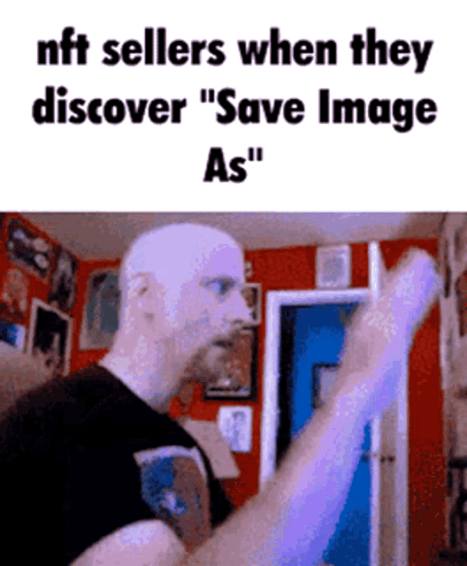
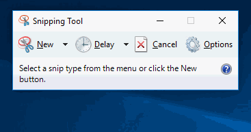

Before you can screenshot an NFT you must ask yourself "why?" The answer to that is actually pretty simple. It's funny seeing NFT "owners" seethe over using the JPG they spent thousands buying."
Whip out the good ol' screenshot tool for your operating system.
>Take the screenshot.
Bask in the glory of knowing you now have the stupid image of an algorithmically generated monkey that someone payed hundreds of thousands for. 😎"